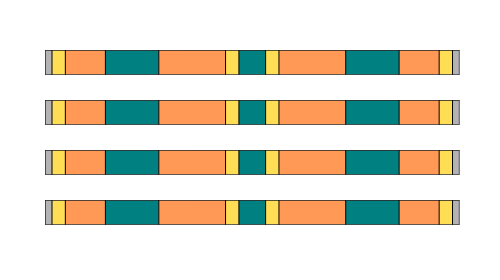

Créer une barre 100% personnalisée
Créer une barre octo 100% personnalisée
Créer une palanque 100% personnalisée
Panier
Modèles de barres
Cliquez sur un modèle pour choisir ses couleurs et l'ajouter à votre panier.

Modèle 101

Modèle 102

Modèle 103

Modèle 104

Modèle 105

Modèle 106

Modèle 107

Modèle 108

Modèle 109

Modèle 110

Modèle 111

Modèle 112

Modèle 113

Modèle 114
Barres plein cœur 3 m
Ces modèles existent aussi en version plein cœur, en 3 m uniquement. Cliquez sur un modèle pour choisir ses couleurs.